4 Colours
Figure 4.1: A Reddit post on colours I randomly came across with.
4.1 Introduction
Consider the following scatterplot of the mpg dataset, showing engine
displacement against highway miles per gallon:
ggplot(mpg, aes(x = displ, y = hwy)) +
geom_point() +
labs(x = "Engine Displacement (L)", y = "Highway MPG")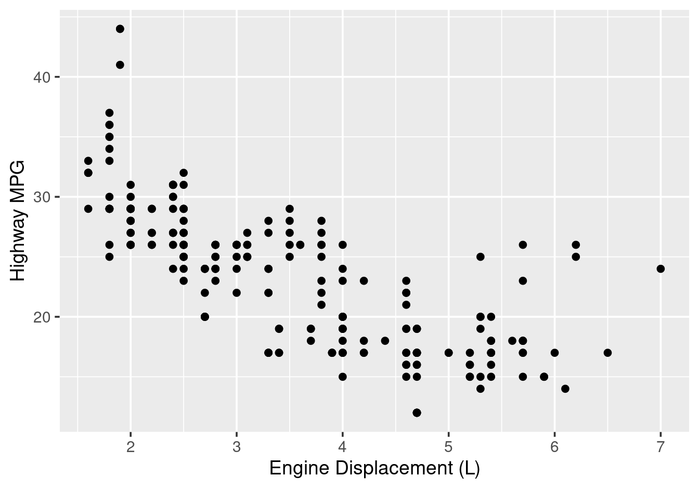
Figure 4.2: All points in one colour — the plot is not using its full potential.
This plot shows a clear negative relationship, but it is not making efficient use of one aspect of the visualisation: colour. All points are the same colour, which means we are missing an opportunity to encode additional information.
Suppose we want to distinguish points by the type of drive train (drv: front,
rear, or 4-wheel drive). One approach is to manually filter the data and plot
each subset with a different colour:
# Inefficient approach: manually filtering and plotting each subset
mpg_f <- filter(mpg, drv == "f")
mpg_r <- filter(mpg, drv == "r")
mpg_4 <- filter(mpg, drv == "4")
ggplot() +
geom_point(data = mpg_f, aes(x = displ, y = hwy), colour = "red") +
geom_point(data = mpg_r, aes(x = displ, y = hwy), colour = "blue") +
geom_point(data = mpg_4, aes(x = displ, y = hwy), colour = "green") +
labs(x = "Engine Displacement (L)", y = "Highway MPG")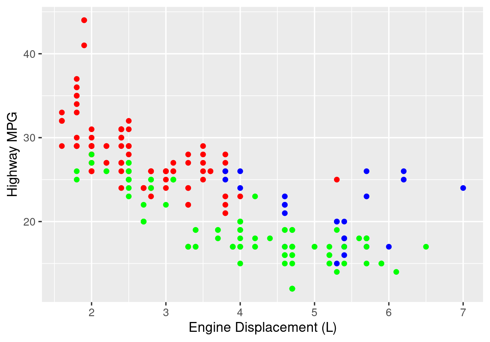
Figure 4.3: Manually splitting data into subsets — inefficient and error-prone.
This approach works, but it is inefficient and error-prone:
- We had to create three separate data subsets
- We had to write three separate
geom_point()calls - There is no legend — the reader has no idea what the colours mean
- If we add a fourth category, we need to modify the code in multiple places
There is a much better way.
4.2 Colour as an aesthetic
In ggplot2, colour is an aesthetic, just like \(x\) and \(y\). The \(x\)
aesthetic maps a variable (engine displacement) to horizontal position; the \(y\)
aesthetic maps another variable (highway MPG) to vertical position. In exactly
the same way, the colour aesthetic maps a variable to colours. The scale
functions control how this mapping works — which colours to use, how to
interpolate between them, and so on.
This means we can include an extra dimension of data simply by adding the
variable to the aes() function:
ggplot(mpg, aes(x = displ, y = hwy, colour = drv)) +
geom_point() +
labs(x = "Engine Displacement (L)", y = "Highway MPG", colour = "Drive")
Figure 4.4: Using colour as a scale — one line of code, automatic legend.
With just colour = drv inside aes(), ggplot2:
- Automatically assigns a distinct colour to each category
- Creates a legend explaining the colour mapping
- Handles any number of categories without code changes
4.2.1 Real-world examples
You will see colour scales used extensively in real-world visualisations:
Choropleth maps: Geographic regions are coloured by a variable such as population density, income, or election results. The colour scale transforms a numeric variable into a visual gradient across the map.
Weather forecast maps: Temperature, rainfall, or pressure are shown using colour gradients. Blue might represent cold temperatures, progressing through green and yellow to red for hot temperatures.
Heatmaps: Used in genomics, finance, and many other fields to show the intensity of values across a two-dimensional grid.
In all these cases, colour serves the same purpose: encoding an additional dimension of data that would otherwise require a third axis or separate plots.
4.2.2 Syntax: British and American spellings
ggplot2 is friendly to both British and American English. The following are
completely equivalent:
# British spelling
aes(colour = drv)
scale_colour_brewer()
# American spelling
aes(color = drv)
scale_color_brewer()Use whichever you prefer, but be consistent within your code. Throughout this
chapter, we use the British spelling colour.
4.3 Colour vs fill: which aesthetic to use?
In ggplot2, there are two colour-related aesthetics: colour and fill.
Understanding when to use each is essential:
colour: Controls the outline or border of shapes, and the colour of points and linesfill: Controls the interior of shapes such as bars, boxes, and polygons
4.3.1 Example: bar charts
Consider a bar chart where we want bars coloured by a categorical variable.
Using colour only affects the outline:
ggplot(mpg, aes(x = class, colour = class)) +
geom_bar() +
labs(x = "Vehicle Class", y = "Count", colour = "Class")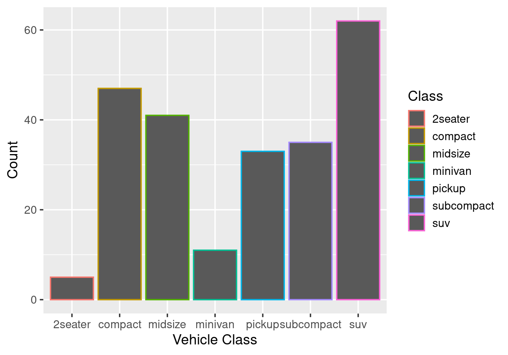
Figure 4.5: Using colour aesthetic — only the outline changes.
To fill the body of each bar, use fill instead:
ggplot(mpg, aes(x = class, fill = class)) +
geom_bar() +
labs(x = "Vehicle Class", y = "Count", fill = "Class")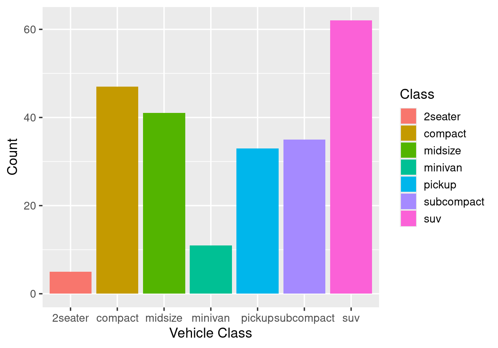
Figure 4.6: Using fill aesthetic — the entire bar is coloured.
In most cases with bar charts, boxplots, histograms, and similar geoms, you
will want fill rather than colour.
4.3.2 When to use each
| Geom | Use colour for |
Use fill for |
|---|---|---|
geom_point() |
Point colour | (not applicable) |
geom_line() |
Line colour | (not applicable) |
geom_bar() |
Bar outline | Bar interior |
geom_boxplot() |
Box outline | Box interior |
geom_histogram() |
Bar outline | Bar interior |
geom_density() |
Line colour | Area under curve |
Important: The remaining sections on colour scales apply equally to both
colour and fill. The only differences are:
- The argument name in
aes():colour = ...vsfill = ... - The scale function name:
scale_colour_*()vsscale_fill_*()
4.4 Colour palettes
Once you map a variable to colour or fill, ggplot2 automatically assigns
colours using a default scale. You can customise this using scale functions.
Scale functions for colour and fill can be divided into four groups based on the type of variable they handle:
4.4.1 Discrete (categorical) scales
For categorical variables (factors or character vectors), use these scales:
| Function | Description |
|---|---|
scale_*_hue() |
Default; colours evenly spaced on the colour wheel |
scale_*_brewer() |
ColorBrewer palettes1 (qualitative, sequential, diverging) |
scale_*_grey() |
Greyscale from light to dark |
scale_*_manual() |
Specify exact colours manually |
ggplot(mpg, aes(x = displ, y = hwy, colour = drv)) +
geom_point() +
scale_colour_hue() + # This is the default
labs(x = "Engine Displacement (L)", y = "Highway MPG", colour = "Drive")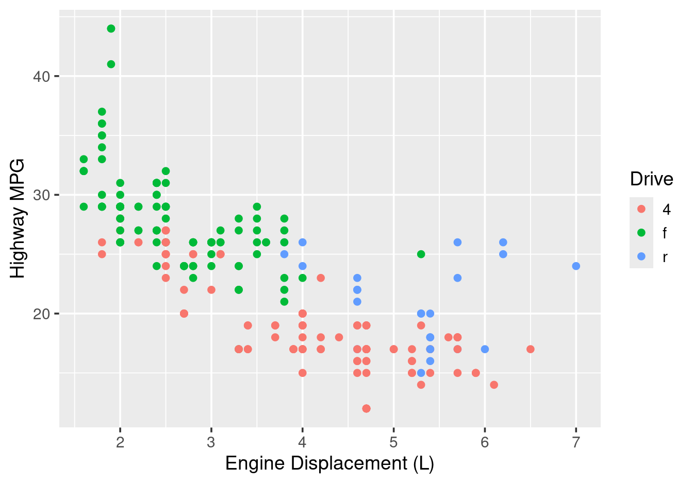
Figure 4.7: Default discrete scale: scale_colour_hue().
ggplot(mpg, aes(x = displ, y = hwy, colour = drv)) +
geom_point() +
scale_colour_brewer(palette = "Set2") +
labs(x = "Engine Displacement (L)", y = "Highway MPG", colour = "Drive")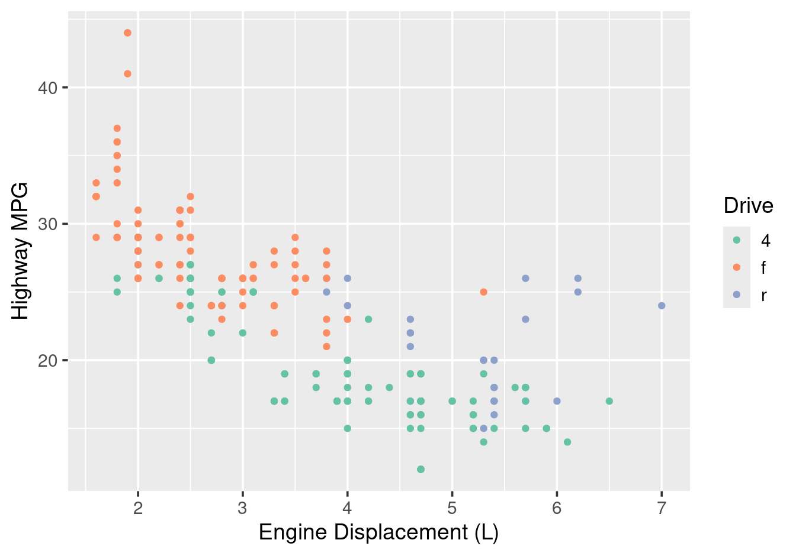
Figure 4.8: ColorBrewer qualitative palette for discrete variable.
ggplot(mpg, aes(x = displ, y = hwy, colour = drv)) +
geom_point() +
scale_colour_grey() +
labs(x = "Engine Displacement (L)", y = "Highway MPG", colour = "Drive")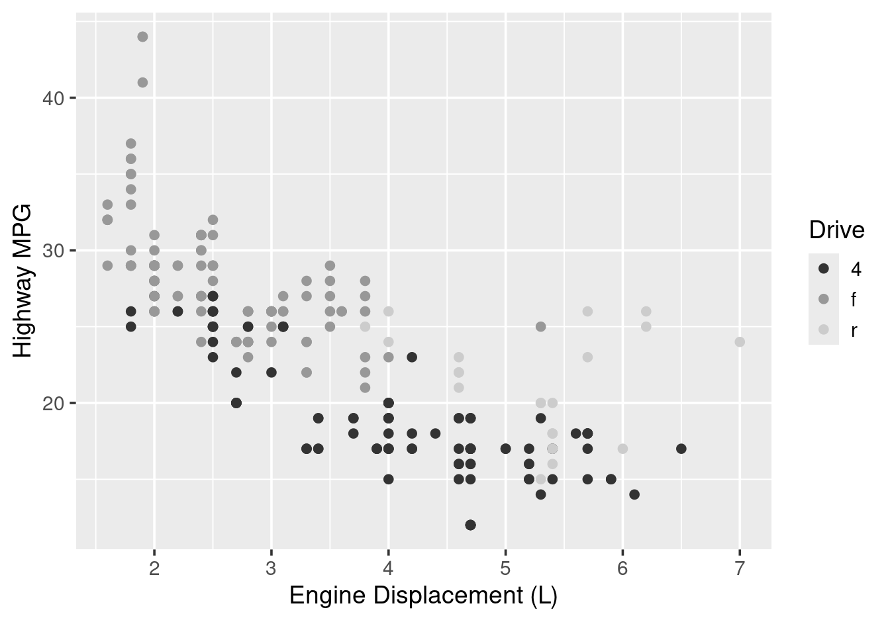
Figure 4.9: Greyscale palette for discrete variable.
4.4.2 Continuous scales
For continuous numeric variables, use these scales:
| Function | Description |
|---|---|
scale_*_gradient() |
Two-colour gradient (sequential) |
scale_*_gradient2() |
Three-colour gradient with midpoint (diverging) |
scale_*_gradientn() |
Custom \(n\)-colour gradient |
scale_*_distiller() |
ColorBrewer palettes adapted for continuous data |
ggplot(mpg, aes(x = displ, y = hwy, colour = cty)) +
geom_point(size = 2) +
scale_colour_gradient(low = "yellow", high = "red") +
labs(x = "Engine Displacement (L)", y = "Highway MPG", colour = "City MPG")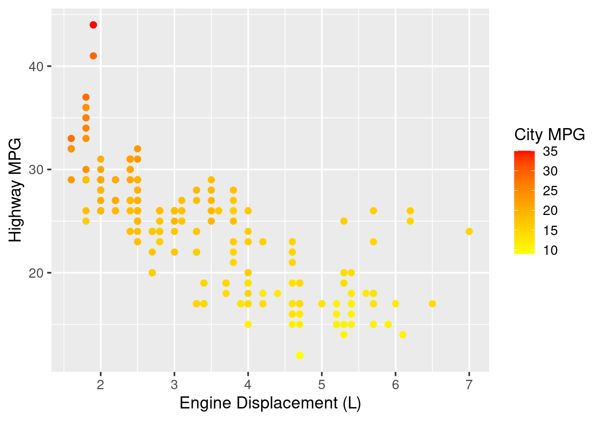
Figure 4.10: Two-colour sequential gradient.
mpg_centred <- mpg |>
mutate(hwy_deviation = hwy - mean(hwy))
ggplot(mpg_centred, aes(x = displ, y = cty, colour = hwy_deviation)) +
geom_point(size = 2) +
scale_colour_gradient2(low = "blue", mid = "white", high = "red", midpoint = 0) +
labs(x = "Engine Displacement (L)", y = "City MPG",
colour = "Highway MPG\ndeviation from mean")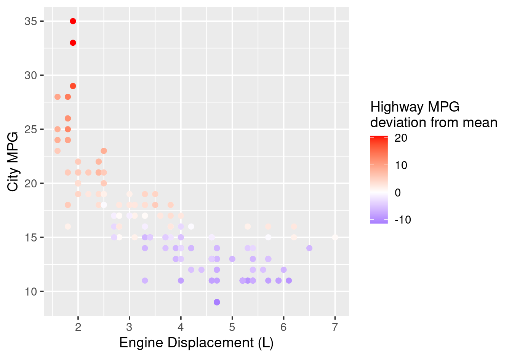
Figure 4.11: Three-colour diverging gradient with midpoint.
ggplot(mpg, aes(x = displ, y = hwy, colour = cty)) +
geom_point(size = 2) +
scale_colour_distiller(palette = "YlOrRd", direction = 1) +
labs(x = "Engine Displacement (L)", y = "Highway MPG", colour = "City MPG")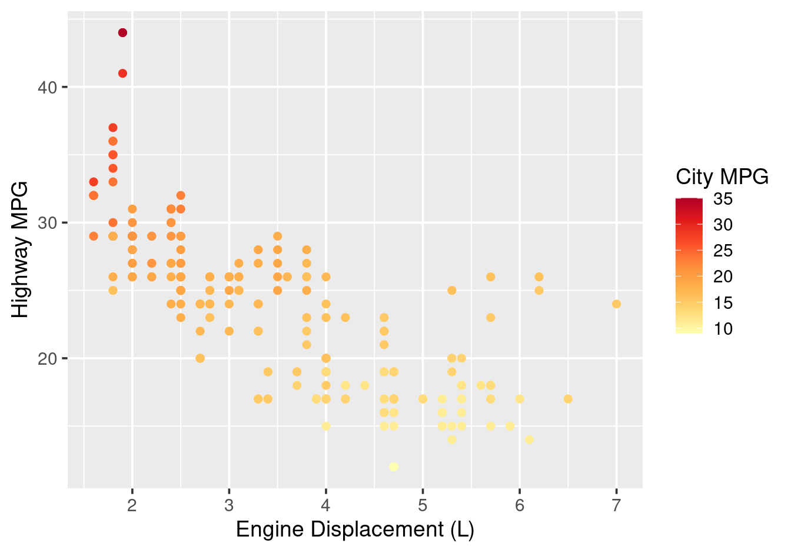
Figure 4.12: ColorBrewer palette adapted for continuous variable.
4.4.3 Binned scales
For continuous variables that you want to display in discrete bins, use these scales:
| Function | Description |
|---|---|
scale_*_steps() |
Two-colour binned gradient (sequential) |
scale_*_steps2() |
Three-colour binned gradient with midpoint (diverging) |
scale_*_stepsn() |
Custom \(n\)-colour binned gradient |
scale_*_fermenter() |
ColorBrewer palettes for binned data |
ggplot(mpg, aes(x = displ, y = hwy, colour = cty)) +
geom_point(size = 2) +
scale_colour_steps(low = "yellow", high = "red") +
labs(x = "Engine Displacement (L)", y = "Highway MPG", colour = "City MPG")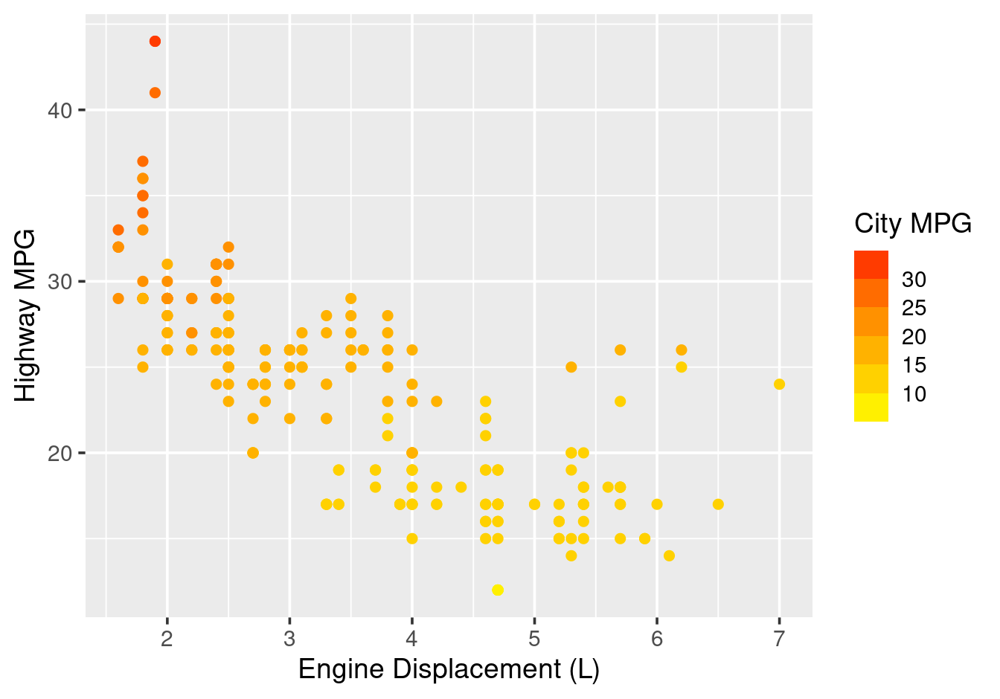
Figure 4.13: Binned sequential scale using scale_colour_steps().
ggplot(mpg, aes(x = displ, y = hwy, colour = cty)) +
geom_point(size = 2) +
scale_colour_fermenter(palette = "Greens", direction = 1) +
labs(x = "Engine Displacement (L)", y = "Highway MPG", colour = "City MPG")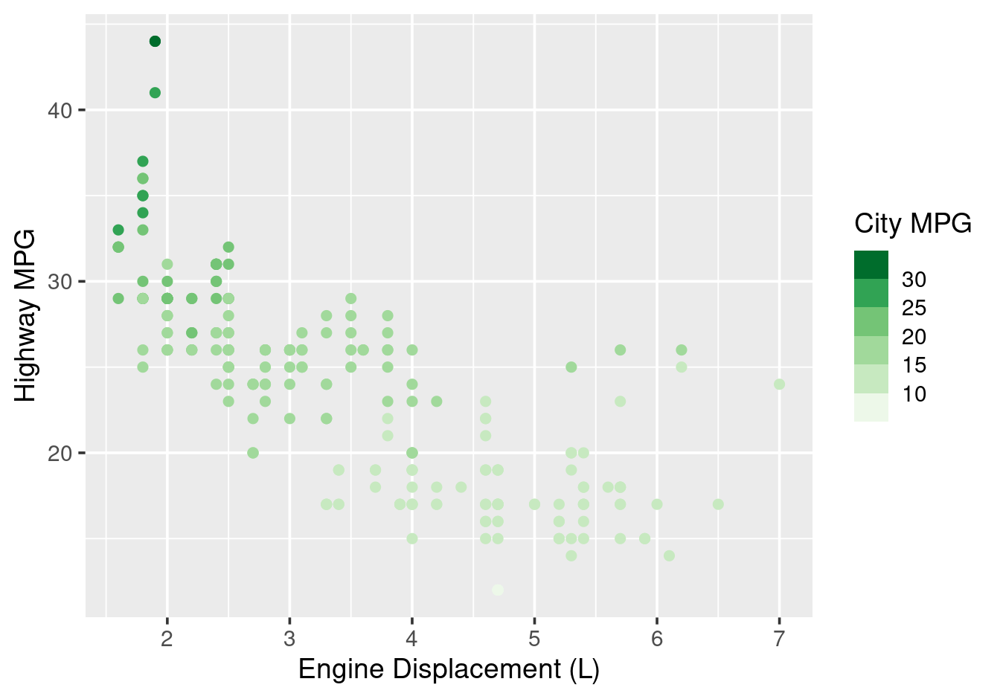
Figure 4.14: ColorBrewer palette for binned continuous variable.
4.4.4 Miscellaneous scales
Some scales serve special purposes:
| Function | Description |
|---|---|
scale_*_identity() |
Use data values directly as colours (rarely needed) |
scale_*_date() |
For Date variables (see Chapter 8) |
scale_*_datetime() |
For datetime variables (see Chapter 8) |
The scale_*_identity() function is used when your data already contains
colour values (e.g., a column of hex codes). This is an advanced use case
that we skip here.
4.4.5 Available ColorBrewer palettes
To see all available ColorBrewer palettes:
RColorBrewer::display.brewer.all()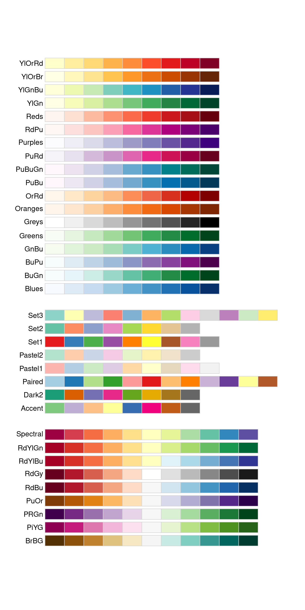
Figure 4.15: Available ColorBrewer palettes.
The palettes are organised into three types:
- Sequential (top): For ordered data from low to high
- Qualitative (middle): For categorical data with no order
- Diverging (bottom): For data with a meaningful midpoint
4.5 Colour-blind-friendly palettes
Approximately 8% of men and 0.5% of women have some form of colour vision deficiency2. When creating visualisations for a broad audience, it is important to choose palettes that remain distinguishable to colour-blind viewers.
4.5.1 The viridis palettes
The viridis family of palettes was specifically designed to be:
- Perceptually uniform (equal steps in data appear as equal steps in colour)
- Accessible to people with colour blindness
- Readable when printed in greyscale
The viridis scales come in three variants matching the variable types:
| Function | For |
|---|---|
scale_*_viridis_d() |
Discrete variables |
scale_*_viridis_b() |
Binned continuous variables |
scale_*_viridis_c() |
Continuous variables |
ggplot(mpg, aes(x = displ, y = hwy, colour = drv)) +
geom_point() +
scale_colour_viridis_d() +
labs(x = "Engine Displacement (L)", y = "Highway MPG", colour = "Drive")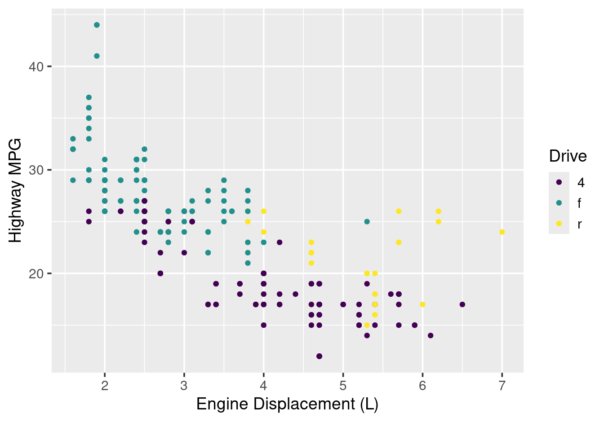
Figure 4.16: Viridis discrete palette.
ggplot(mpg, aes(x = displ, y = hwy, colour = cty)) +
geom_point(size = 2) +
scale_colour_viridis_c() +
labs(x = "Engine Displacement (L)", y = "Highway MPG", colour = "City MPG")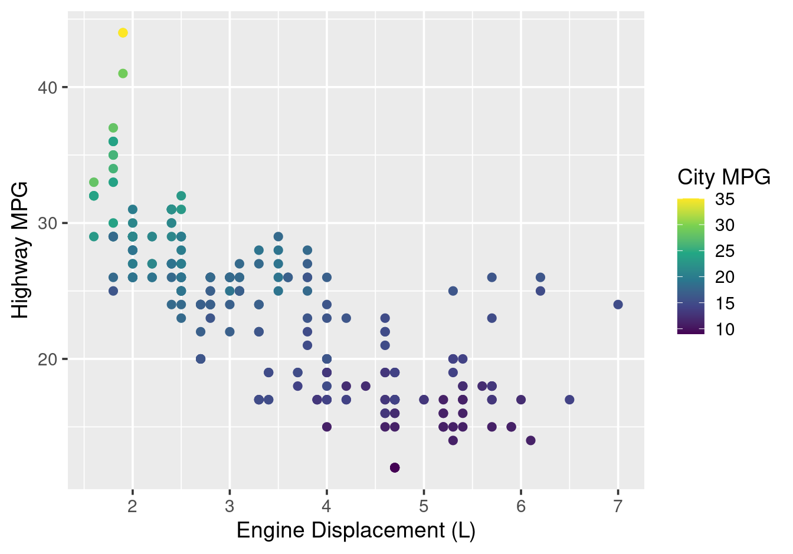
Figure 4.17: Viridis continuous palette.
ggplot(mpg, aes(x = displ, y = hwy, colour = cty)) +
geom_point(size = 2) +
scale_colour_viridis_b() +
labs(x = "Engine Displacement (L)", y = "Highway MPG", colour = "City MPG")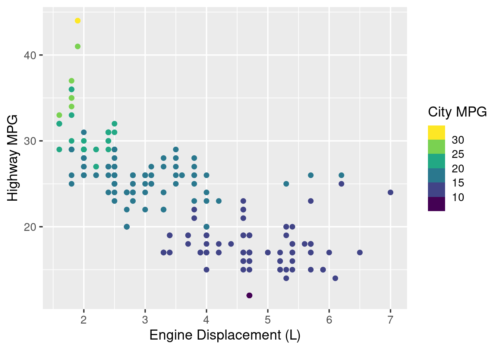
Figure 4.18: Viridis binned palette.
Additional viridis options are available via the option argument:
| Option | Name | Notes |
|---|---|---|
"A" |
magma | Dark to light, via purple |
"B" |
inferno | Dark to light, via orange |
"C" |
plasma | Purple to yellow |
"D" |
viridis | Default; purple to green to yellow |
"E" |
cividis | Optimised for colour-blind viewers |
ggplot(mpg, aes(x = drv, fill = drv)) +
geom_bar() +
scale_fill_viridis_d(option = "E") +
labs(x = "Drive Type", y = "Count", fill = "Drive")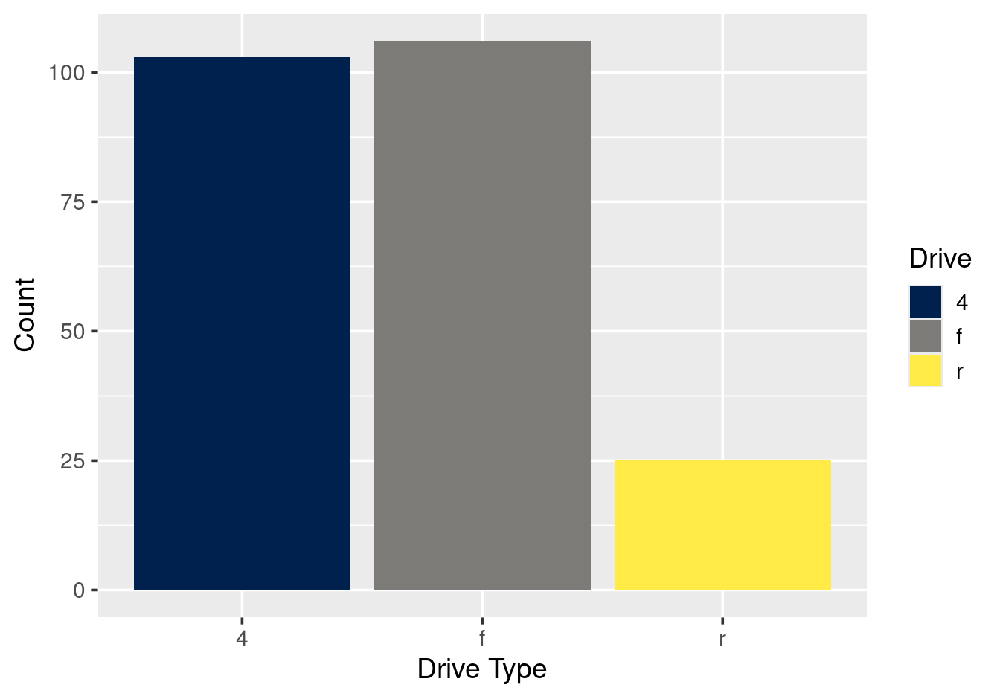
Figure 4.19: Viridis ‘cividis’ option — optimised for colour blindness.
For a complete list of viridis options and colour previews, see the
viridis package vignette.
Note, however, that you do not need to install or load the viridis package
to use these colour scales in ggplot2 — the scale_*_viridis_*() functions
are built into ggplot2 itself.
4.5.2 The Okabe-Ito palette
The Okabe-Ito palette3 is another colour-blind-friendly (CBF) option, particularly
useful for discrete variables. You can use it with scale_*_manual():
# Get the Okabe-Ito colours
okabe_ito <- palette.colors(palette = "Okabe-Ito")
okabe_ito## [1] "#000000" "#E69F00" "#56B4E9" "#009E73" "#F0E442"
## [6] "#0072B2" "#D55E00" "#CC79A7" "#999999"ggplot(mpg, aes(x = displ, y = hwy, colour = drv)) +
geom_point() +
scale_colour_manual(values = okabe_ito[2:4]) +
labs(x = "Engine Displacement (L)", y = "Highway MPG", colour = "Drive")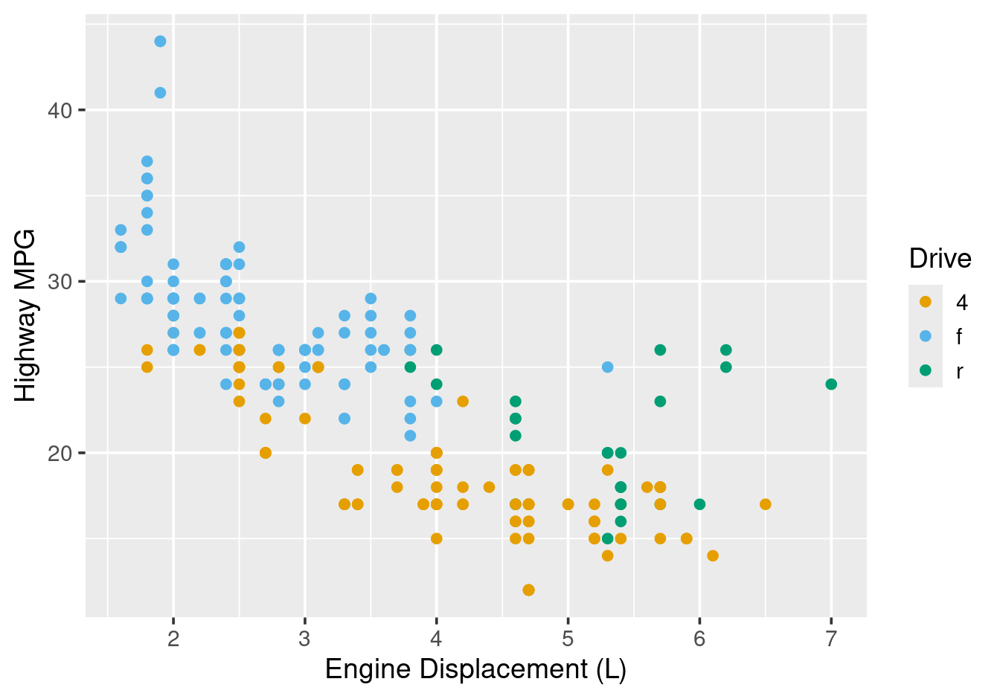
Figure 4.20: Using the Okabe-Ito palette with scale_colour_manual().
4.5.3 Specifying colours with hex codes
When using scale_*_manual(), you can specify exact colours using hexadecimal
(hex) codes. A hex code is a six-character string starting with #, where the
characters represent the red, green, and blue components (00 to FF each):
ggplot(mpg, aes(x = drv, fill = drv)) +
geom_bar() +
scale_fill_manual(values = c("4" = "#E69F00", # Orange
"f" = "#56B4E9", # Sky blue
"r" = "#009E73")) + # Teal
labs(x = "Drive Type", y = "Count", fill = "Drive")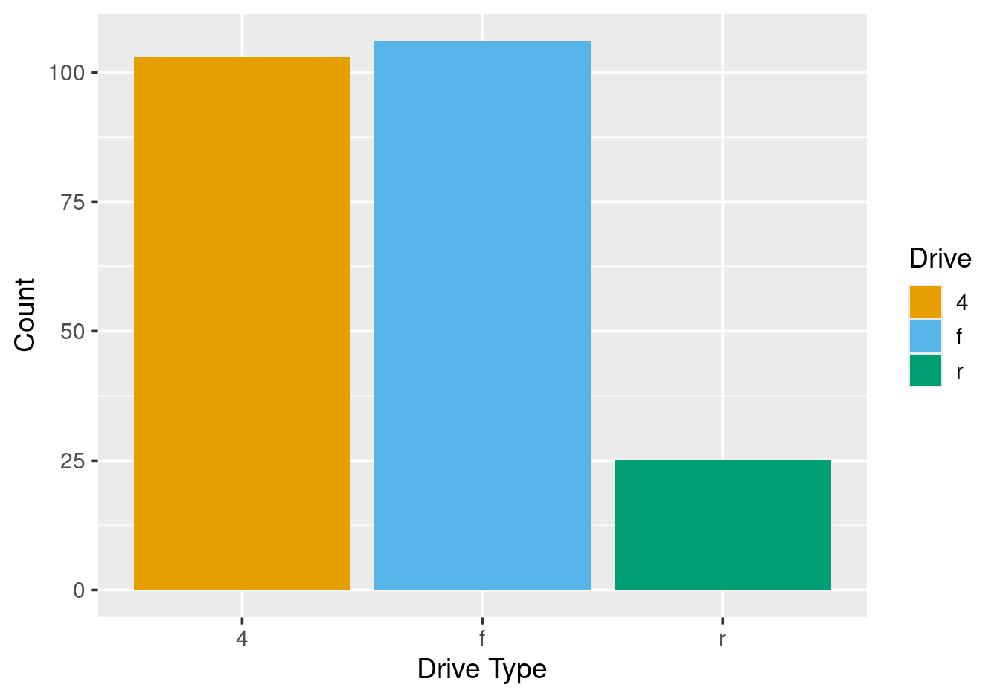
Figure 4.21: Specifying exact colours using hex codes.
You can find hex codes for specific colours using online colour pickers, or
use named colours in R (see colors() for a list of 657 named colours).
4.6 Opacity with alpha
The alpha aesthetic controls the opacity (transparency) of graphical
elements. Like colour, alpha can be mapped to a variable to encode additional
information.
When the plot uses only black (i.e., no colour aesthetic is mapped), alpha
behaves similarly to a greyscale palette: lower alpha values make points appear
lighter (more transparent), while higher values make them darker (more opaque).
In this sense, scale_alpha_*() functions can serve a similar purpose to
scale_*_grey() for encoding a variable visually.
ggplot(mpg, aes(x = displ, y = hwy, alpha = cty)) +
geom_point(size = 2) +
labs(x = "Engine Displacement (L)", y = "Highway MPG", alpha = "City MPG")Figure 4.22: Mapping a variable to alpha (opacity).
The scale functions for alpha follow the same pattern as colour scales:
| Function | For |
|---|---|
scale_alpha() |
Continuous variables (default) |
scale_alpha_continuous() |
Continuous variables (explicit) |
scale_alpha_discrete() |
Discrete variables |
scale_alpha_binned() |
Binned continuous variables |
scale_alpha_manual() |
Manual specification |
ggplot(mpg, aes(x = displ, y = hwy, alpha = cty)) +
geom_point(size = 2) +
scale_alpha(range = c(0.2, 1)) + # From 20% to 100% opacity
labs(x = "Engine Displacement (L)", y = "Highway MPG", alpha = "City MPG")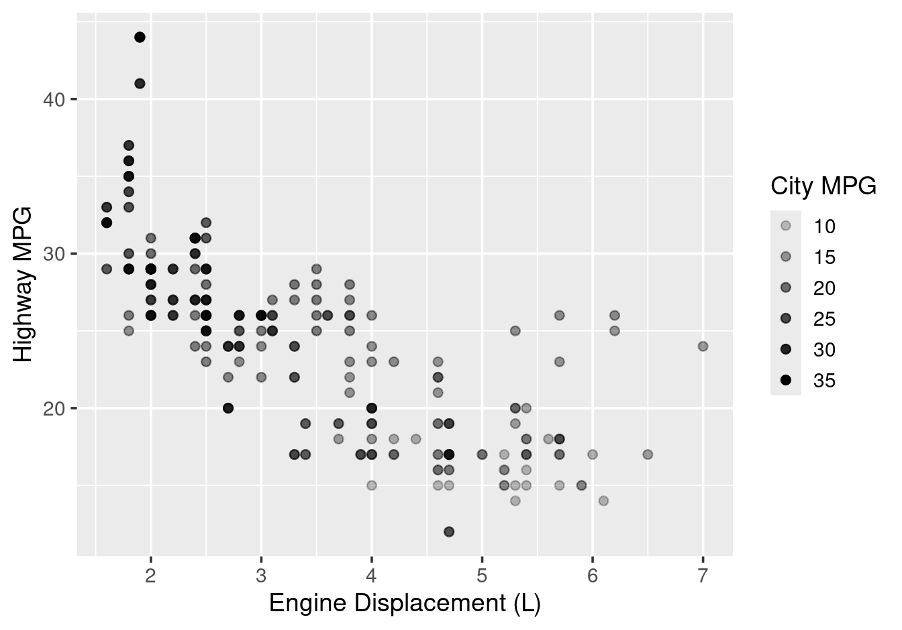
Figure 4.23: Customising the alpha range.
Alpha is particularly useful when you have overlapping points, as it allows you to see density while still encoding a variable.
4.7 Summary
Colour encodes an extra dimension of data, just like the \(x\) and \(y\) axes.
Use colour for points, lines, and outlines; use fill for bar and box
interiors.
4.7.1 Colour scale functions
The table below summarises the main colour scale functions, organised by
variable type. All entries share the scale_*_ prefix (replace * with
colour, color, or fill); only the suffixes are shown. The exception is
the greyscale/opacity row, where the scale functions are spelled
out in full because alpha replaces the * rather than the suffix. Lastly, CBF stands for colour-blind-friendly.
| Discrete | Binned | Continuous | Remarks |
|---|---|---|---|
discrete() |
binned() |
continuous() |
Defaults, used when none specified; not CBF |
hue() |
— | — | Default discrete; evenly spaced on colour wheel; not CBF |
grey(), scale_alpha_discrete(), scale_alpha_manual() |
— | — | Greyscale or opacity; good for print; CBF (alpha only useful when plot is otherwise uncoloured) |
brewer() |
fermenter() |
distiller() |
ColorBrewer palettes; qual/seq/div available; not CBF |
| — | steps() |
gradient() |
Sequential; two colours (low to high); generally not CBF |
| — | steps2() |
gradient2() |
Diverging; three colours with midpoint; not CBF |
| — | stepsn() |
gradientn() |
Custom \(n\)-colour gradient; not CBF |
viridis_d() |
viridis_b() |
viridis_c() |
Viridis palettes; CBF |
manual() |
— | — | Manual specification; CBF with Okabe-Ito |
4.7.2 Key points
Naming convention & spelling: Scale functions follow
scale_<aesthetic>_<type>(), where the aesthetic can becolour(orcolorfor identical behaviour), orfillwhen colouring interiors of shapes.Opacity: Only the default and manual ones (those with suffixes
discrete,binned,continuous,manual) apply to opacity i.e.alphabeing the aesthetic.Palette types:
- Sequential: For ordered data from low to high (
gradient,steps,distillerwith sequential palettes) - Diverging: For data with a meaningful midpoint (
gradient2,steps2,distillerwith diverging palettes) - Qualitative: For unordered categories (
brewerwith qualitative palettes,hue) - Colour-blind friendly:
viridisfamily, Okabe-Ito viamanual
- Sequential: For ordered data from low to high (
When in doubt: Use
scale_*_viridis_*()for a perceptually uniform, colour-blind-friendly palette that works for most situations.